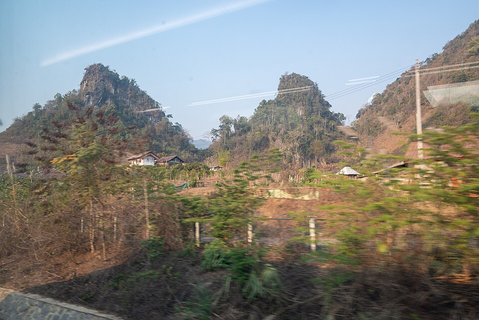

画一颗心：萨塔拉的出院礼物
离开昆明医院前，老挝女孩萨塔拉送来一幅画：中老两国国旗之间，一颗粉色的心。她指着画，请翻译告诉大家，这是被治好的心。


萨塔拉和另外四名老挝患儿乘中老铁路抵达昆明，在云南省阜外心血管病医院接受诊疗。
到了医院，家属还要面对语言、住宿和费用问题。院方安排入院生活，社工全程陪伴，并协助处理手术、交通和食宿费用。萨塔拉在院治疗约两周。
报道还提到，院方与老挝等国的医疗机构签有合作备忘录。
萨塔拉还请翻译转达，她想用这颗心把两国连在一起。
亲诚惠容与民心相通
铁路接通了两地，医院和社工把路从车站延伸到诊室。萨塔拉画下的那颗心，给这种周边合作留下了一个孩子的视角。
